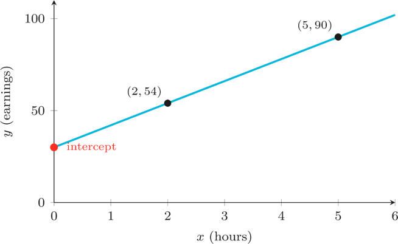
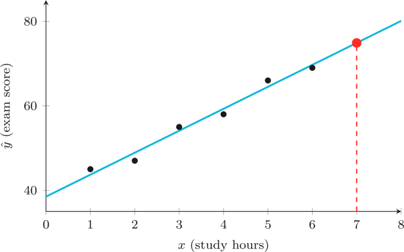
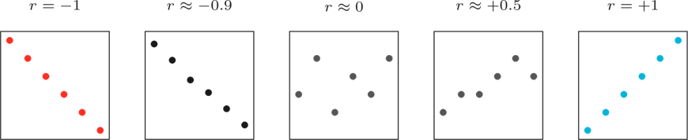
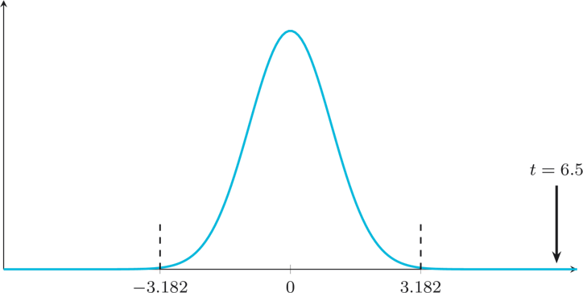

The Regression Engine
Nine challenges on linear regression: line of best fit, Pearson correlation $r$, coefficient of determination $R^2$, and testing the significance of the slope. Drawn from Weeks 11-12.
Reading regression equations
10 points eachRead the Rate
The diagram shows a line of best fit for a tutor's earnings model. Read the two points and determine the slope $m$.

Find the Floor
For the line of best fit $\hat{y} = 5.2x + 38.5$, what is the $y$-intercept?
Square Deal
For a regression, Pearson's $r = 0.8$. What is the coefficient of determination $R^2$?
Predictions, slope, and interpretation
20 points eachPredict & Win
Use the regression equation $\hat{y} = 5.2x + 38.5$ to predict the exam score for the student marked in red on the scatter plot. The marked point lies on the line at a specific $x$-value — read that $x$-value from the diagram, substitute it into the equation, and give $\hat{y}$ to 2 decimal places.

Slope Machine
From a regression problem you have the column sums:
$n = 5, \quad \textstyle\sum x = 15, \quad \sum y = 40, \quad \sum xy = 146, \quad \sum x^2 = 55$
Calculate the slope $m = \dfrac{n\sum xy - \sum x \sum y}{n\sum x^2 - (\sum x)^2}$. Round to 2 decimal places.
Strength Read
For a regression of network response time on the number of concurrent users, Pearson's $r = -0.93$. The diagram shows five scatter panels at different correlation values. Identify which panel best matches $r = -0.93$, then describe the strength and direction of the relationship in two words (for example, "weak positive").

Full Pearson $r$ & significance testing
30 points eachPearson's Prize
For the same dataset as Challenge 41, the column sums (now including $\sum y^2$) are:
$n = 5, \quad \textstyle\sum x = 15, \quad \sum y = 40, \quad \sum xy = 146, \quad \sum x^2 = 55, \quad \sum y^2 = 400$
Calculate Pearson's correlation coefficient $r = \dfrac{n\sum xy - \sum x \sum y}{\sqrt{[\,n\sum x^2 - (\sum x)^2\,][\,n\sum y^2 - (\sum y)^2\,]}}$. Round to 3 decimal places.
T-Time
For a regression slope test, the sample slope is $m = 2.6$ with standard error $\text{SE}(m) = 0.40$.
Calculate the test statistic $t$. Round to 2 decimal places.
The Verdict
The diagram shows a t-distribution with critical values marked and a test statistic indicated by an arrow. Read where the test statistic falls relative to the rejection regions. At $\alpha = 0.05$ two-tailed with $df = 3$, what is the decision about $H_0$? Type your answer in.

You've reached the end
Make sure every flag you captured has been pasted into CTFd before the timer expires. The scoreboard locks at the end of the hour and prizes will be awarded to the top three. Well done for making it through a tough semester.